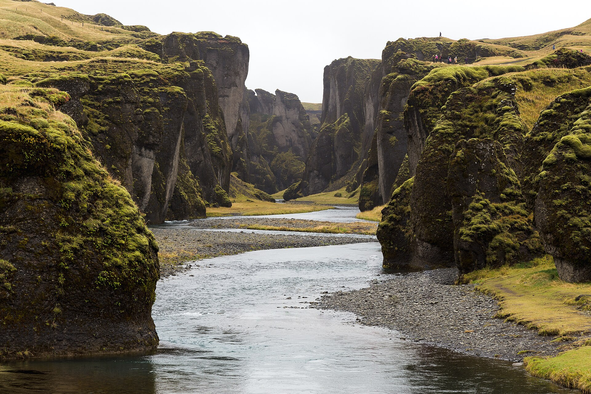
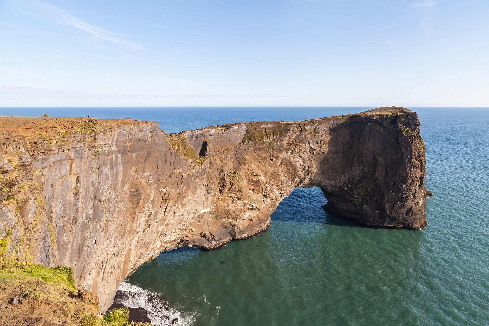
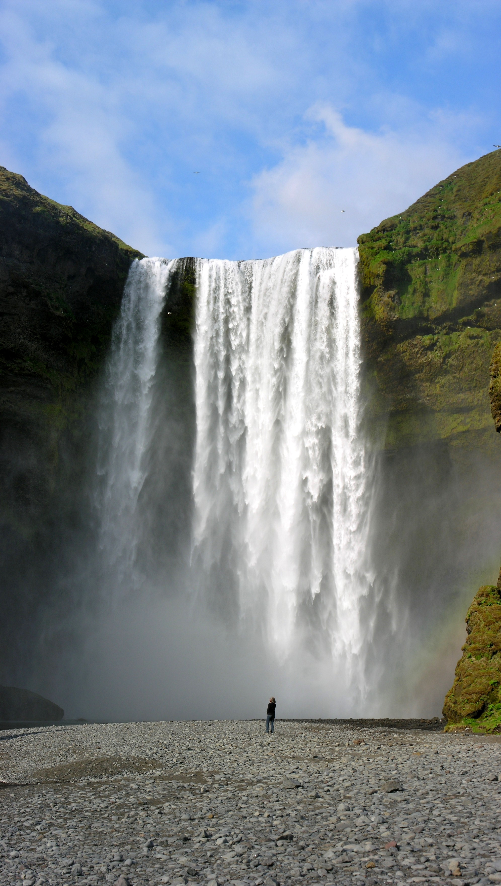
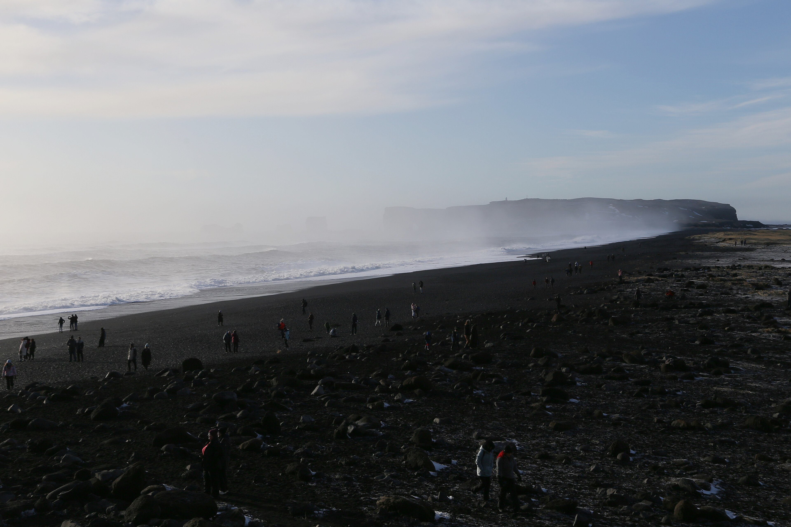
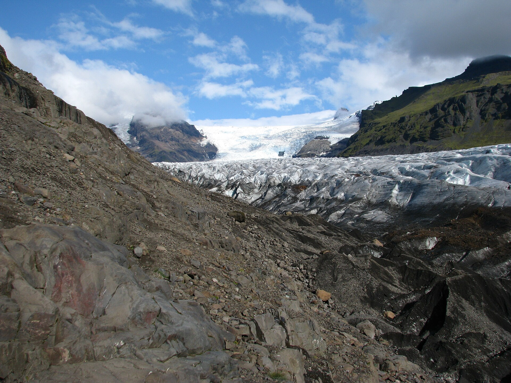

Move east immediately
The arrival day is active. Pick up at KEF, eat en route, and reach the first waterfalls before sleeping near Skógar.
Iceland · Sep 8–11 or 12, 2026
Land in the morning, point the car southeast, and build the Iceland leg around the waterfalls, black coast, canyon, and ice that dominate Ryan Shirley’s film.



September 12 buys the glacier day. September 11 means a smart turn at Fjaðrárgljúfur—not a punishing dash to Jökulsárlón.
See both edits01 / THE ROUTE LOGIC
Ryan’s video roams the entire island. Your useful slice is much tighter: Seljalandsfoss → Skógafoss → Reynisfjara → Fjaðrárgljúfur. Add Skaftafell and Jökulsárlón only when the September 12 flight is confirmed.
The arrival day is active. Pick up at KEF, eat en route, and reach the first waterfalls before sleeping near Skógar.
Keep the same hotels, but swap beach, canyon, and glacier stops within the open daylight when wind or surf dictates.
The last Iceland night comes back west. Do not wake at Jökulsárlón and gamble a five-hour airport run.
03 / INTERACTIVE FIELD MAP
04 / THE RYAN SHIRLEY EDIT
The source film is a nationwide top ten, not a four-day itinerary. This is the practical edit for your dates, family rhythm, and onward flight.

Ryan spends nearly two straight minutes on the same South Coast line you can actually drive: Seljalandsfoss, Skógafoss, Reynisfjara, and Fjaðrárgljúfur—then continues into the glaciers.
Start at Seljalandsfoss · 3:19 ↗Five of the film’s most photogenic ideas sit on one paved eastbound line. This is the trip.
Watch chapter ↗Ryan calls the warm river worth the long uphill hike. Keep it as a dry, low-wind bonus—carrier only, not a fixed promise.
Watch chapter ↗F-roads, river crossings, specialized vehicles, and a full adventure day. Spectacular, but wrong for this short infant-paced leg.
Watch chapter ↗Every one pulls the route another half-day or more away from KEF. They belong in a longer Ring Road or west-coast trip.
Watch chapter ↗05 / THE PAYOFF



06 / FAMILY FIELD NOTES
This is a carrier-first trip. The main viewpoints are short, but spray, gravel, stairs, and exposed cliff paths make a stroller a secondary tool.
A regular vehicle covers this paved core route. Choose an automatic with room for luggage and a child seat; add AWD for comfort, not because this plan uses F-roads.
Seljalandsfoss’s behind-the-fall path and Gljúfrabúi can be very wet and slippery. With a baby, the front views are still excellent; skip the wet loop in wind.
At Reynisfjara, keep the child held, stay far above the waterline, never turn your back on the sea, and do not enter if the warning is red.
Official warning ↗The lagoon’s minimum age is two. If your child is still under two, only an adult split works—and it is not strong enough to displace a South Coast day.
Age policy ↗Ryan filmed Svínafellsjökull. For this plan, use Skaftafell’s signed S1 glacier trail: 4.1 km, roughly 1–1½ hours, rated easy by the park.
Park trail list ↗Check the Icelandic Road Administration and SafeTravel before leaving. If wind closes the plan, move the coast day rather than racing the forecast.
Live road map ↗07 / WHAT TO HOLD
That single decision determines whether Jökulsárlón is in or out.
Pickup on the morning of September 8; return before the Europe flight.
Night 1 near Skógar/Hvolsvöllur; middle nights in Vík or Kirkjubæjarklaustur; final night Reykjavík/KEF.
Use live road, wind, and surf information to settle the order—not to add more geography.
08 / SOURCES + IMAGE CREDITS
Top 10 Places to Visit in Iceland; chapter list and location sequence used for the route edit.
Watch on YouTube ↗Official South Coast overview and current warning guidance for Reynisfjara.
South Coast ↗Beach warning ↗Official access, current route lengths, trail difficulty, and visitor information for Skaftafell.
Skaftafell ↗Road Administration conditions plus the Blue Lagoon’s current minimum-age policy.
Roads ↗Lagoon age ↗New photography: Fjaðrárgljúfur by Jon Flobrant (CC0), Dyrhólaey by Diego Delso (CC BY-SA 4.0), Svínafellsjökull by Bromr (CC BY-SA 3.0), and Reykjadalur by Jakub Hałun (CC BY-SA 4.0), via Wikimedia Commons. Canyon · Dyrhólaey · Glacier · Reykjadalur